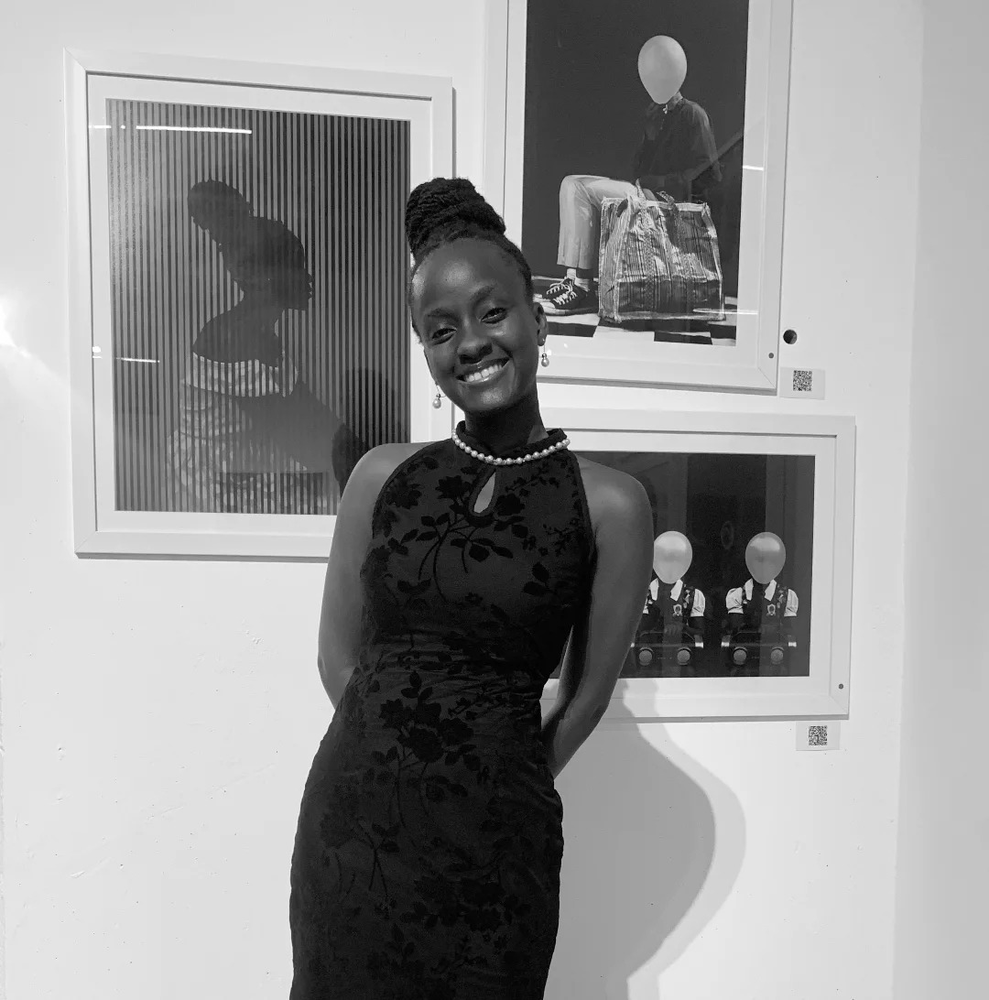
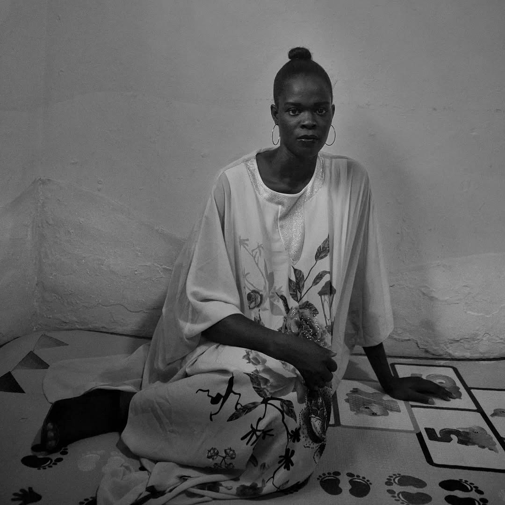

Adediran
Adetutu
Photographer · Visual Storyteller
I photograph what people carry in silence — the beauty they don't notice in themselves, and the tension they've grown too familiar with.
"A photograph is a conversation with someone who isn't in the room."
I came to photography the way most people come to the things that matter — slowly, then all at once. Growing up in Lagos, I was surrounded by extraordinary faces and unscripted moments that no one seemed to think were worth stopping for.
I wanted to stop. I wanted to record the woman at the market who adjusted her gele with such precision it looked like a prayer. The child who laughed with their whole body at nothing anyone else could see. These felt like stories the world was already forgetting.
Over time, my work moved into fine art and conceptual portraiture — where the image is not just a record but a question. I started working with symbolism, staging, surreal juxtapositions. Not to hide reality, but to reveal more of it.
Today my practice moves freely between documentary and art photography. Both are honest. Both are searching for the same thing: the exact moment when a person is most completely themselves, and doesn't know you're watching.
The Approach
Every session begins with stillness. I don't rush toward the image.
Whether documentary or staged — every element earns its place in the frame.
I edit down to the essential. What remains must be impossible to ignore.


From the series Quiet Authority — fine art portraiture, Lagos.
Follow the Work
New work, behind-the-scenes, and visual notes shared on Instagram.